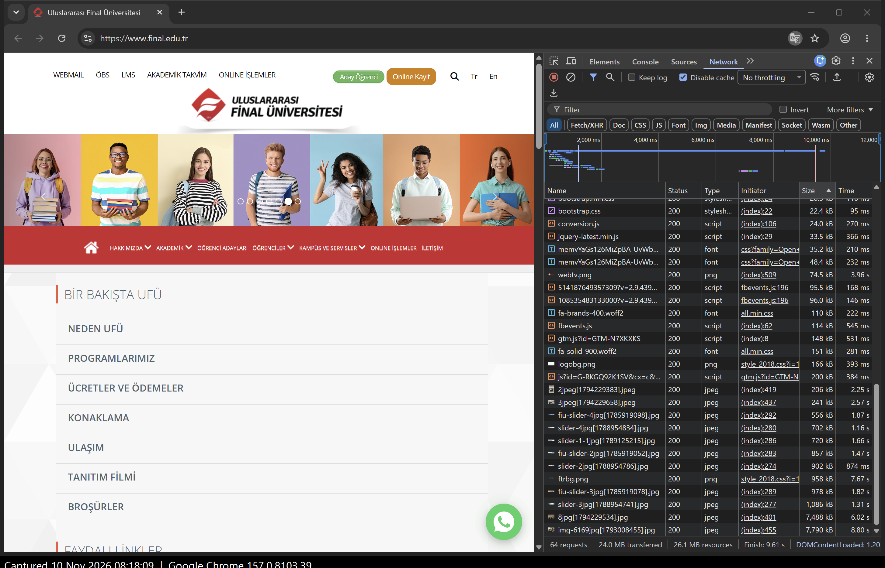
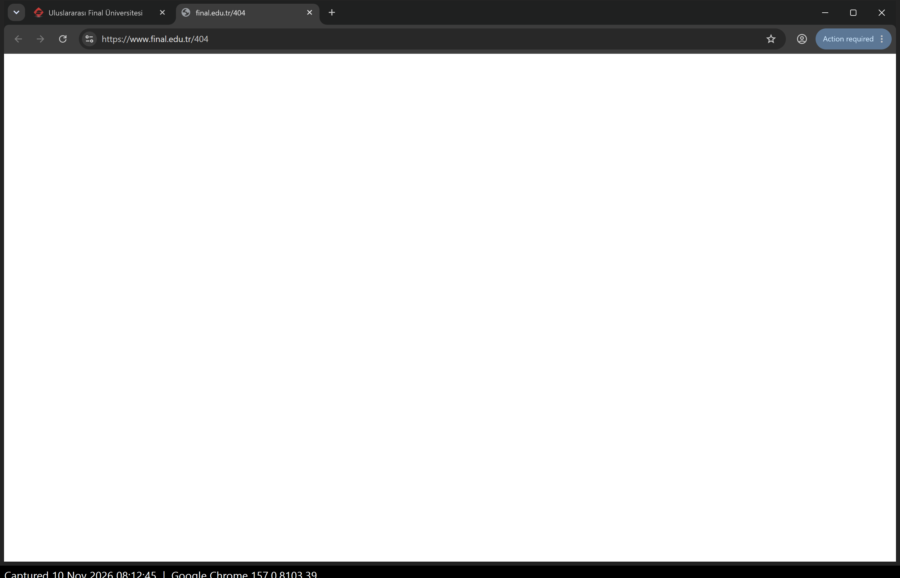
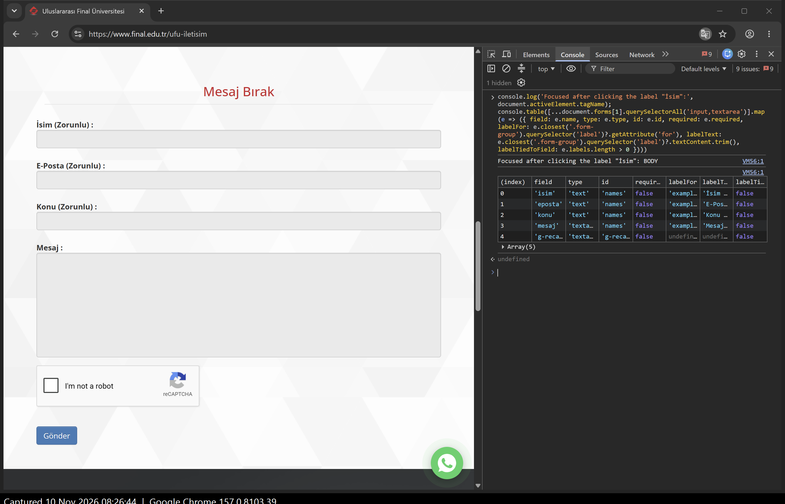

| Site audited | https://www.final.edu.tr (home page, contact page /ufu-iletisim, search page) |
| Organisation | Final International University (Uluslararası Final Üniversitesi), Girne, North Cyprus |
| Student | Abdalla Ali — 2103060186 · SFWE475 / CPRG201, Assignment 2 |
| Audit date and browser | 10 November 2026, 08:11–08:33 (local time) · Google Chrome 157.0.8103.39, desktop, Windows 11, fresh browser profile |
Every screenshot shows the address bar and has a capture time printed under it. Evidence IDs in brackets point to files in evidence/; the full list is in the appendix. I only browsed like a normal visitor: no logins, no scanners, no hidden pages, and no form was sent.
A1 HTTPS and redirects. Typing http://final.edu.tr ended on https://www.final.edu.tr, so the site forces a secure connection and adds “www” automatically. DevTools’ Security panel reports “This page is secure (valid HTTPS)”, TLS 1.3, and “all resources served securely”, so there is no mixed content. One honest limit: on my laptop the certificate issuer shows as “Bitdefender Personal CA”, because my antivirus inspects HTTPS traffic, so I could not see the university’s public certificate authority from this machine. A small weakness: some menu links are still written as http:// (for example the Webmail link and the “Neden UFÜ” page) and only work because of the redirect. [A1]
A2 URL structure. Five page addresses scored against the five Week 5 rules:
| URL | HTTPS | Short & readable | Lowercase | Hyphens | Few params |
|---|---|---|---|---|---|
| /ufu-iletisim | Pass | Pass | Pass | Pass | Pass |
| /m-11-ogrenciler/a-367-akademik-takvim | Pass | Partly — internal codes “m-11”, “a-367” | Pass | Pass | Pass |
| /ufu-7-akademik/o-4-enstituler/f-6-lisansustu-egitim-ogretim-enstitusu-leoe | Pass | Fail — 75 characters, three coded levels | Pass | Pass | Pass |
| /search?q=zzzqqq | Pass | Pass | Pass | Pass | Pass (1) |
| aday.final.edu.tr/yataygecisTC | Pass | Partly | Fail — “TC” | Fail — words joined | Pass |
The site uses HTTPS and hyphens well, and news pages have readable slugs (n-1714-bilim-ve-uluslararasi-…). The weak point is the number codes from the content system (m-11, a-367, f-6), which mean nothing to a visitor and make addresses long. Image file names also contain square brackets, e.g. slider-2jpg[1788954786].jpg, which must be encoded in links. [A2]
A3 One request, closely. The main document request is GET, status 200 OK, Content-Type: text/html; charset=UTF-8, compressed with Brotli and served through Cloudflare. With the cache disabled, the home page made 64 requests and transferred 24.0 MB (finish 9.61 s on my fast connection; the HTML itself was ready at 1.20 s). Sorting by size shows why: two news photos are 7.79 MB and 7.49 MB, about 64% of the whole page, yet both are 6000×4000-pixel camera photos shown at only 104×75 pixels (width:104px; height:75px in the source) — full-size photos used as tiny thumbnails. The one Fetch/XHR request is a POST to Google Analytics (…/g/collect, status 204 No Content); the page also loads Google Tag Manager, Google Ads and two Facebook Pixels. [A3]
A4 A page that does not exist. /no-such-page-123 answers 302 and redirects to /404, which answers 200 OK with an empty page. This is a soft 404, and a bad one: the visitor sees a completely white screen with no logo, no menu, no message and no way back except the Back button. Because the final status is 200, search engines may also treat broken links as real pages. [A4]
A5 Caching. The HTML document sends Cache-Control: no-store, no-cache, must-revalidate (plus Pragma: no-cache and an Expires date in 1981): the browser must never keep a copy and downloads the page fresh on every visit (Cloudflare marks it DYNAMIC). The 7.79 MB news image sends Cache-Control: max-age=14400: the browser may reuse it for 4 hours without asking again. Because image names already contain a version number, they could safely be cached much longer (for example a year), so returning visitors would not download the same megabytes again. [A5]
A6 Where the page is built. In the raw source (Ctrl+U) the menu, the “HABERLER VE DUYURULAR” heading, every news headline and its date are already present as plain HTML. The Elements panel shows the same structure; JavaScript (jQuery) only adds the image slider and the lightbox. So the page is server-rendered — a classic multi-page site where the server builds each page. This is good for speed of first text and for search engines. I also noticed the <title> tag is placed inside <body> instead of <head>. [A6]
A7 SEO basics. Checked in the DevTools Console on the home page:
| Item | Found | Comment |
|---|---|---|
| Page title | Yes | “Uluslararası Final Üniversitesi” — the same title also appears on the contact and search pages, so tabs and search results all look alike. |
| Meta description | Yes, weak | Only repeats the name; gives Google nothing to show about programmes or admissions. |
| Canonical link | Missing | Both final.edu.tr and /home show the home page; no canonical tells Google which is the main one. |
| lang attribute | Missing | <html class="no-js"> — screen readers cannot know the page is Turkish. |
| h1 count | 0 | No main heading on the page. |
| rel="sponsored"/"ugc" | 0 | Not needed — no adverts or user comments on the page. |
[A7]
B1 Loading state. Chrome 157 no longer offers “Slow 3G”, so I used its slowest preset, “3G”, with the cache disabled. At 2 s the old page stays on screen with only the tab spinner moving. At 8 s the new page appears, but text is in a fallback serif font and menu icons are missing. At 20 s the layout is usable, with icon boxes still empty. At 60 s the page was still loading (17.1 MB received, finish 1.1 min) — mostly the two huge news photos. The site shows no spinner or placeholders of its own, but because it is server-rendered the text arrives early, which is the best part of this experience. [B1]
B2 Empty state. Searching for “zzzqqq” shows the heading “Arama Sonuçları”, an empty search box, and the single word “Sonuç” (“Result”) — nothing else. There is no “no results found” message, no suggestion, and the typed word has been cleared from the box, so the visitor cannot even see what they searched for. [B2]
B3 Error state. With the network set to Offline, clicking “İLETİŞİM” showed Chrome’s own “No internet / ERR_INTERNET_DISCONNECTED” page. The site itself says nothing and offers no retry; the visitor depends on the browser’s message. For a traditional site this is normal and less urgent than the other findings. [B3]
B4 Form validation. The contact form (name, e-mail, subject, message, reCAPTCHA) was not tested safely: its fields have no required attribute and the page has no checking script, so pressing “Gönder” would really send the request to the server even when empty. I therefore tested the search form: pressing “Ara!” with an empty box does nothing at all. The page’s regOnay() function silently refuses anything shorter than 3 letters, with no message, so the visitor cannot tell why nothing happened. Errors appear nowhere. [B4, B5]
B5 Labels. Each contact field has visible text beside it, but none is tied to its field:
| Field | Visible label | Tied to field | Click on label moves cursor? | Note |
|---|---|---|---|---|
| İsim (Zorunlu) | Yes | No | No (focus stays on page) | All four fields share id="names"; all labels point to for="example-text-input" (a template leftover). “(Zorunlu)” is text only. E-mail is type="text", not type="email". No placeholders. |
| E-Posta (Zorunlu) | Yes | No | No | |
| Konu (Zorunlu) | Yes | No | No | |
| Mesaj | Yes | No | No |
[B5]
B6 Keyboard only. Task: find the contact phone number. From the home page: 17 Tab presses to reach “İLETİŞİM”, Enter, then 26 more Tabs to reach “+90 392 650 6666” — 43 Tabs and 1 Enter. The order is logical (top bar, header, main menu) and there is no trap. Problems: there is no “skip to content” link; the dropdown menus HAKKIMIZDA, AKADEMİK, ÖĞRENCİLER and KAMPÜS VE SERVİSLER and the search icon are skipped completely, so a keyboard user cannot open them at all; the slider’s Previous/Next links take focus with no visible outline; and on the contact page 10 presses go into the embedded Google Map with no outline on the page. Ordinary links show Chrome’s default focus ring. [B6]
B7 Automated audit. Lighthouse 12.8.2, Accessibility category: home page 63/100, contact page 65/100. Top three issues — home: links with no name (35 links, mostly news image links), images without alt (10, e.g. social icons and the logo), and <html> without lang. Contact: form fields without labels (4), links with no name (6), images without alt (3). These match my manual findings in A7, B5 and B6. [B7]
B8 Link and button text.
| Current text | Where | Better text |
|---|---|---|
| “DEVAMI” | After each news summary | “Haberin devamı: ISRIS Kongresi” (read the full story + its topic) |
| “DEVAMI” | Button under the photo gallery | “Tüm fotoğrafları gör” (See all photos) |
| (house icon only, no name) | Main menu | Accessible name “Ana sayfa” (Home page) |
| (magnifier icon only, no name) | Header search | A real button named “Sitede ara” (Search the site) |
| “Tr” / “En” | Language switch | “Türkçe” / “English” |
The mobile menu button also has no name (suggest “Menüyü aç”). [B8]



1. Secure by default. Every visit is moved to HTTPS, the connection uses TLS 1.3, and all resources load securely [A1]. 2. Content arrives as real HTML. Because the server builds the page, the text was readable within about 8 s even on a 3G connection, and search engines can read every news headline [A6, B1].
Order: problem 1 slows every visitor on every visit; problem 2 completely blocks some visitors from parts of the site; problem 3 hurts fewer visits but leaves people stuck with no help.
1. The home page is 24 MB because of oversized photos. Evidence: A3, A6, B1, A5.
Who it affects: all visitors, most of all prospective students abroad on mobile data or slow Wi-Fi. Fix: resize news thumbnails to the size they are shown (about 200 px wide, roughly 20 KB each), compress slider images, load below-the-fold images only when scrolled to, and let browsers cache images for longer. Effort: low. Impact: high.
2. Keyboard and screen-reader users are blocked from menus and the contact form. Evidence: B5, B6, B7, B8, A7.
Who it affects: people who cannot use a mouse, blind visitors using screen readers, and anyone using voice control. Fix: give each form field its own id and tie the label to it; add lang="tr"; make the dropdown menus open with the keyboard; add a “skip to content” link; give icon links and images a name/alt text. Effort: medium. Impact: high.
3. Dead ends with no message. Evidence: A4, B2, B4.
Who it affects: anyone following an old link, searching for something not on the site, or typing a short search word. Fix: a real “page not found” page with the menu and a search box (and status 404); a “no results — try another word” message that keeps the search word; and visible messages on the search and contact forms instead of silent failure. Effort: low–medium. Impact: medium.
Browser: Google Chrome 157.0.8103.39 (fresh profile, DevTools docked right). All captures on 10 November 2026, local time. Every image has the capture time printed in a strip under the window.
| ID | File | What it shows | Time | Page address |
|---|---|---|---|---|
| A1 | A1-redirect.png | Typed http://final.edu.tr, landed on https://www.final.edu.tr | 08:11 | https://www.final.edu.tr |
| A1 | A1-certificate.png | Security panel: valid HTTPS, TLS 1.3, all resources secure | 08:20 | https://www.final.edu.tr |
| A2 | A2-long-url.png | Example of a long, coded URL | 08:20 | /ufu-7-akademik/o-4-enstituler/f-6-… |
| A3 | A3-network.png | Network summary: 64 requests, 24.0 MB, finish 9.61 s | 08:17 | https://www.final.edu.tr |
| A3 | A3-big-images.png | Sorted by size: 7.79 MB and 7.49 MB news photos | 08:18 | https://www.final.edu.tr |
| A3 | A3-document-headers.png | Document: GET, 200 OK, text/html | 08:18 | https://www.final.edu.tr |
| A3 | A3-fetch-xhr.png | Fetch/XHR: POST to Google Analytics, 204 | 08:18 | https://www.final.edu.tr |
| A4 | A4-missing-page.png | Blank white page for a missing address | 08:12 | /no-such-page-123 → /404 |
| A4 | A4-status-codes.png | 302 → /404 → 200 in the Network panel | 08:19 | /no-such-page-123 |
| A5 | A5-cache-document.png | Document Cache-Control: no-store, no-cache, must-revalidate | 08:18 | https://www.final.edu.tr |
| A5 | A5-cache-image.png | Image Cache-Control: max-age=14400, 7.78 MB | 08:18 | /images/haber/img-6169jpg[…].jpg |
| A6 | A6-source.png | Raw HTML already contains news headlines and dates | 08:15 | view-source:https://www.final.edu.tr |
| A6 | A6-elements.png | Elements panel; html has no lang; title inside body | 08:14 | https://www.final.edu.tr |
| A7 | A7-seo-check.png | Console table: title, description, canonical, lang, h1 | 08:19 | https://www.final.edu.tr |
| B1 | B1-3g-01-at-2s.png … B1-3g-04-at-60s.png | Home page loading under “3G” at 2, 8, 20 and 60 s | 08:23–08:24 | https://www.final.edu.tr |
| B2 | B2-empty-search.png | Search “zzzqqq”: only the word “Sonuç” | 08:24 | /search?q=zzzqqq |
| B3 | B3-offline.png | Offline: Chrome’s own no-internet page | 08:25 | /ufu-iletisim |
| B4 | B4-empty-search-submit.png | Empty search submitted: nothing happens, no message | 08:27 | /search?q=zzzqqq |
| B4/B5 | B5-labels-and-required.png | Contact fields: same id, labels not tied, none required; label click leaves focus on page | 08:26 | /ufu-iletisim |
| B6 | B6-keyboard-17-tabs-to-contact.png | Focus on “İLETİŞİM” after 17 Tabs | 08:32 | https://www.final.edu.tr |
| B6 | B6-keyboard-26-tabs-to-phone.png | Focus on the phone number after 26 more Tabs | 08:33 | /ufu-iletisim |
| B7 | B7-lighthouse-home.png / .html | Lighthouse Accessibility 63 | 08:30 | https://www.final.edu.tr |
| B7 | B7-lighthouse-contact.png / .html | Lighthouse Accessibility 65 | 08:30 | /ufu-iletisim |
| B8 | B8-vague-links.png | Console table of “DEVAMI”, “Tr/En” and unnamed links | 08:33 | https://www.final.edu.tr |